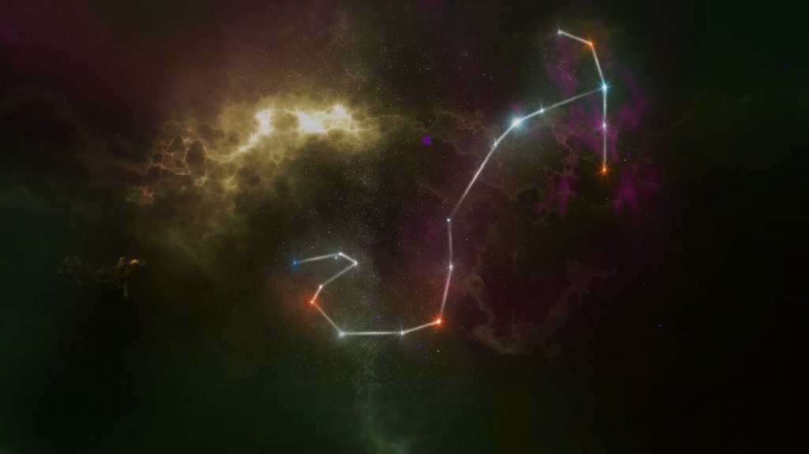
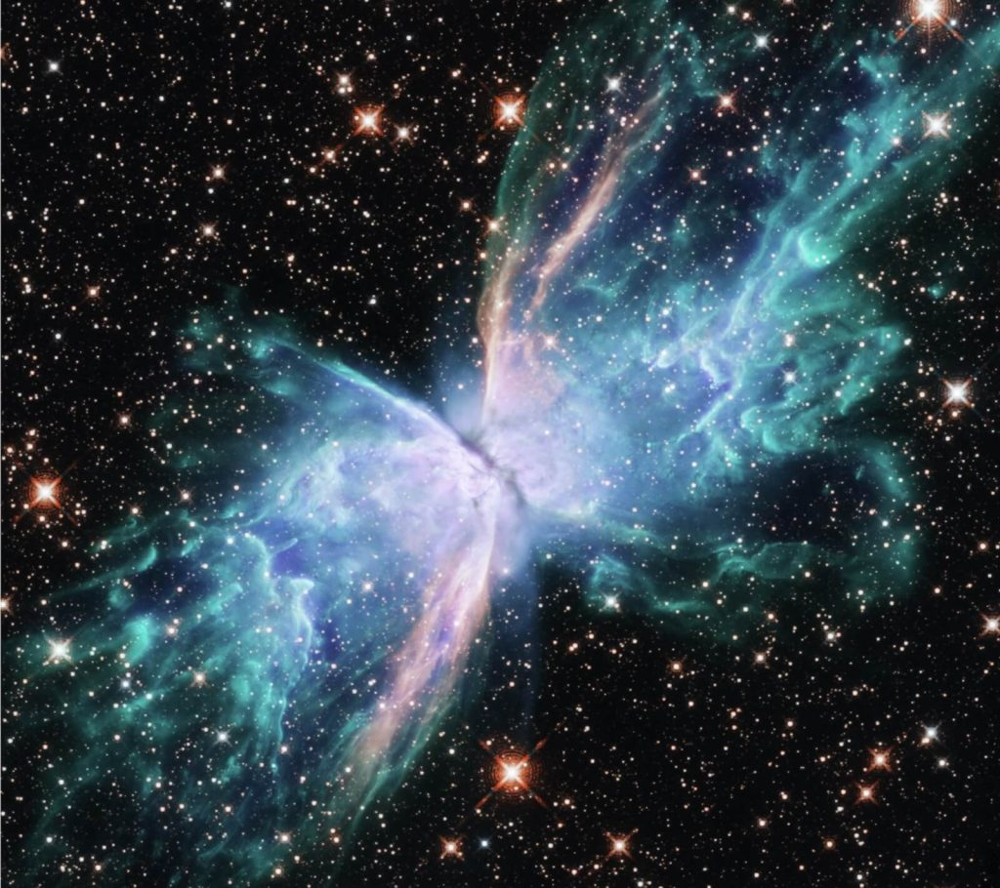
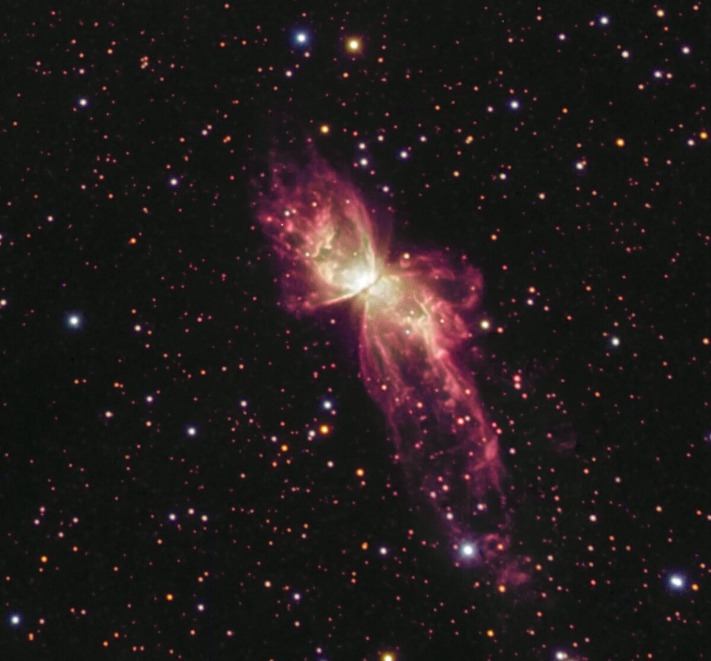
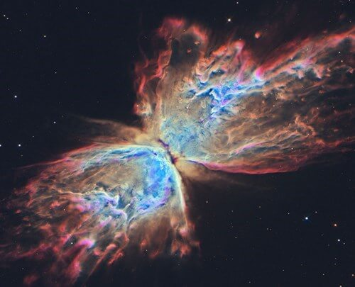
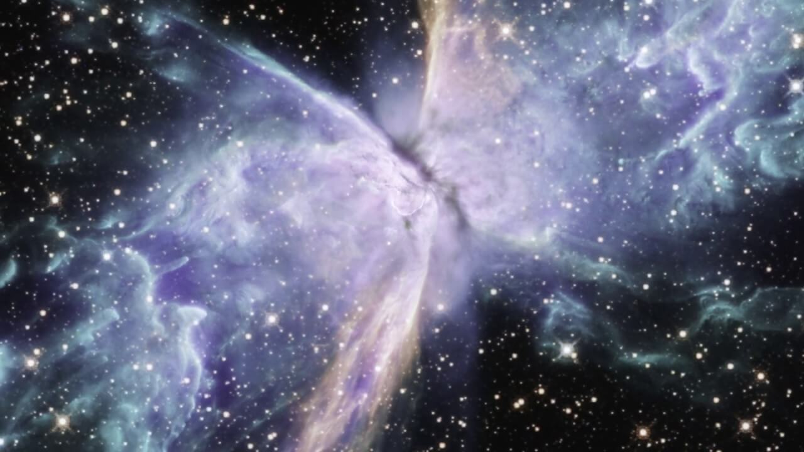
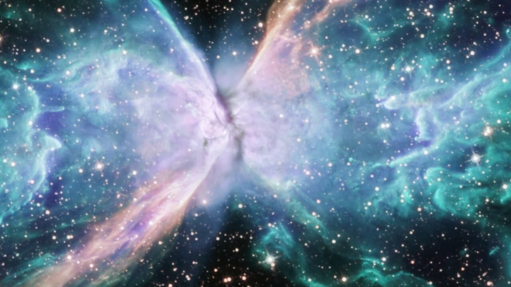

ဒီအာကာသ တိမ်တိုက်ကြီးရဲ့ ပုံဟာလှလွန်းလို့ မြင်ရတဲ့ သူတွေ ရင်သပ်ရှုမော ဖြစ်သွားကြရပါတယ်။
ဒီ ဓါတ်ငွေ့တိမ်တိုက်ကြီးကို ဖွဲ့စည်းထားတဲ့ ဓါတ်ငွေ့တွေဟာ အပြင်ဖက်ကို လိပ်ပြာတောင်ပံပုံ လှပစွာ ပြန့်ထွက်သွားလို့ သူ့ကို လိပ်ပြာနက်ဗြူလာ လို့အမည် ပေးထားကြတာ ဖြစ်ပါတယ်။

ဒီ နက်ဗြူလာကြီးရဲ့ တောင်ပံနှစ်ဖက် ဆုံတဲ့ နေရာမှာ ကြယ်ကြီး တစ်လုံး ရှိပါတယ်။ ဒီကြယ်ဟာ စကြာဝဠာ အတွင်း ရှာဖွေတွေ့ရှိခဲ့ပြီးသမျှ ကြယ်တွေထဲမှာ အပူရှိန် အမြင့်ဆုံး ကြယ်တွေထဲမှာ ပါဝင်ပါတယ်။
ဒီကြယ်ကြီးရဲ့ မျက်နှာပြင် အပူချိန်ဟာ ဒီဂရီ စင်တီဂရိတ် နှစ်သိန်းခွဲ (၂၅၀,၀၀၀˚ စင်တီဂရိတ်) ရှိပါတယ်တဲ့။
ဒီကြယ်ပုလေးဟာ ကျွန်တော်တို့ နေရဲ့ ဒြပ်ထုရဲ့ အပုံ ၁၀၀ ပုံမှာ ၆၄ ပုံပဲ ရှိပါတယ် (0.64 Solar Mass)။ ဒီကြယ်ပုကို အလွန်သိပ်သည်းတဲ့ ဖုန်နဲ့ ဓါတ်ငွေ့တိမ်တိုက်ကြီးနဲ့ ကာထားပါတယ်။ နောက်ပြီး ဒီကြယ်ဖြူပုလေးဟာ တဖြည်းဖြည်း အသက်သေဆုံးနေတဲ့ သက်တမ်းလွန် ကြယ်တစ်စင်းလဲ ဖြစ်ပါတယ်။

ဒီဓါတ်ငွေ့တိမ်တိုက်ကြီးဟာ ကြီးမားကျယ်ပြန့် ယုံတင်မကပါဘူး။ ကမ္ဘာကနေ အကွာအဝေးအားဖြင့် အလင်းနှစ် ၄,၀၀၀ ခန့်ဝေးတဲ့ နေရာမှာ တည်ရှိနေတာ ဖြစ်ပါတယ်။
ဒီ လိပ်ပြာနက်ဗြူလာ ဓါတ်ငွေ့တိမ်တိုက်တိမ်တိုက်ကြီးရဲ့ သိပ္ပံအမည်ကတော့ NGC 6302 ပဲ ဖြစ်ပါတယ်။

ဒီ နက်ဗြူလာ ဓါတ်ငွေ့တိမ်တိုက် ကြီးက ဘာ့ကြောင့် လိပ်ပြာပုံ ဖြစ်နေရတာလဲ
ဒီပုံကို မြင်ရတဲ့ သူတွေက ရင်သပ်ရှုမောနဲ့ သဘာဝ တရားရဲ့ ဆန်းကြယ်ပုံတွေကို အံ့ဩတကြီး ဖြစ်နေကြချိန်မှာ အာကာသ သိပ္ပံပညာရှင်တွေကတော့ ဒီဓါတ်ငွေ့တိမ်တိုက်ကြီး ဘယ်လိုကြောင့် လိပ်ပြာပုံနဲ့ ဓါတ်ငွေ့တွေ ဖြာထွက်နေ ရတာလဲ ဆိုတာကို စဉ်းစား အဖြေရှာနေ ကြပါတယ်။အခြို့ သိပ္ပံပညာရှင် တွေကတော့ ဒီ လိပ်ပြာ နက်ဗြူလာအနေနဲ့ ဓါတ်ငွေ့တိမ်တိုက်ကြီး မဖြစ်လာမီက သူ့ရဲ့ အလယ်ဗဟိုမှာ ကြယ်နှစ်လုံးပူး (Binary Star System) တစ်စုံ ရှိနေခဲ့တယ်လို့ ယူဆကြပါတယ်။ ဒီ ကြယ်နှစ်လုံးပူးဟာ အခု ဓါတ်ငွေ့တိမ်တိုက်ကြီး ဖြစ်လာမယ့် နေရာရဲ့ အလယ်ဗဟိုမှာ အခြင်းခြင်း လှည့်ပါတ်နေ ကြပါတယ်။

အဲ့လိုပြိုဆင်းလာတာနဲ့အမျှ ကြယ်ကြီးရဲ့ ဗဟိုကို ဝင်လာတဲ့ ဓါတ်ငွေ့တွေ ရုတ်တရက် များလာပြီး မူလက ကုန်ခါနီး ဖြစ်နေတဲ့ လောင်အားက ပြန်ကောင်းလာပါတယ်။ တနည်းအားဖြင့် အတွင်းပိုင်း ဗဟိုချက်ပေါက်ကွဲထွက် သွားတာပါပဲ။

ဒီလို ပေါက်ကွဲသွားတဲ့ အခါကျတော့ မျက်နှာပြင်ပေါ်နဲ့ မျက်နှာပြင်နားက ဓါတ်ငွေ့တွေ အပြင်ကို ပေါက်ကွဲထွက်ကုန်ကြပါတယ်။ ဒီလို ပျံ့ထွက်သွားတဲ့ အချိန်မှာ မူလက ကြယ်နှစ်လုံးပူး အခြင်းခြင်း လဉ်ပါတ်ခဲ့တဲ့ လမ်းကြောင်းတလျှောက်မှာ ပြန့်ကျဲနေတဲ့ ဖုန်မှုန့်တွေက ပေါက်ကွဲထွက်လာတဲ့ ဓါတ်ငွေ့တွေကို ဖမ်းထိန်းထားလိုက်ပါတယ်။
